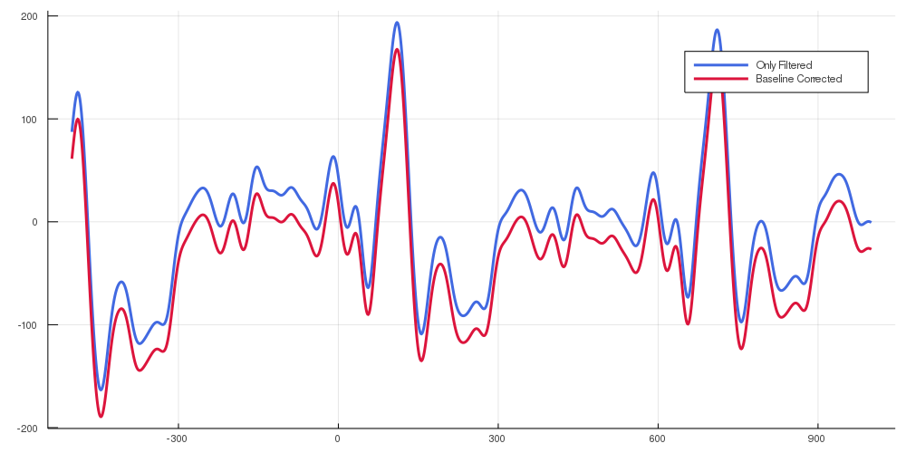
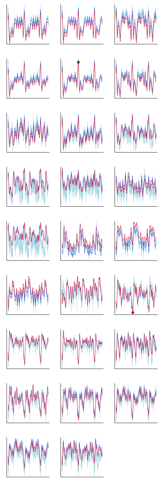

Simple pipeline
Loading a single condition from subject where epoch data was extracted via BESA®. In This example we use some more plausible data than the test data
using Plots
gr()
using Measures
using MegTools
test = load_cont_epochs("condEpoch.mat")Dict{Any,Any} with 4 entries:
"4" => [showing 3 of 100 slices]…
"1" => [showing 3 of 100 slices]…
"2" => [showing 3 of 100 slices]…
"3" => [showing 3 of 100 slices]…The data from condition "2" (defined in BESA®) is averaged across all the trials
test_average = average_across_trials(test["2"])2-dimensional KeyedArray(NamedDimsArray(...)) with keys:
↓ time ∈ 1501-element Vector{Float64}
→ channels ∈ 319-element Vector{Symbol}
And data, 1501×319 Array{Float64,2}:
(:MEG0112) (:MEG0113) … (:IAS_Y) (:IAS_z) (:SYS201)
(-500.0) 2.56249 21.5772 -0.655651 -0.417233 0.0
(-499.0) 3.12303 19.4094 -0.691414 -0.405312 0.0
(-498.0) 2.1424 13.8768 -0.679493 -0.321865 0.0
(-497.0) 1.7165 13.7295 -0.679493 -0.286102 0.0
(-496.0) 2.72797 15.3495 … -0.715256 -0.309944 0.0
(-495.0) 1.81067 19.3068 -0.667572 -0.286102 0.0
⋮ ⋱
(994.0) 2.70243 -1.72295 -0.667572 -0.429153 0.0
(995.0) -0.983829 -0.0452927 -0.691414 -0.38147 0.0
(996.0) -4.31213 1.7537 … -0.691414 -0.405312 0.0
(997.0) -4.86396 3.63506 -0.64373 -0.405312 0.0
(998.0) -3.68522 4.85062 -0.667572 -0.452995 0.0
(999.0) -5.28816 5.96115 -0.619888 -0.405312 0.0
(1000.0) -4.48724 4.85557 -0.64373 -0.429153 0.0We select data that we're interested in: in this case the pre-defined auditoryN1m channels and take a look at the averaged waveforms from the selected channels.
test_average_auditory,auditory_left,auditory_right = select_channels(
test_average,
paradigm="auditoryN1m",
)
plot(test_average_auditory, legend=false, size=(1000,500))
Applying filters to smoothen out the waveform
filtered = highlow_butterworth_filter(test_average_auditory, 1000)
plot(
test["2"].time,
filtered(channels=:MEG1621),
label="Filtered", size=(1000,500),
linewidth=3,
color=:royalblue,
);
plot!(
test["2"].time,
test_average_auditory(channels=:MEG1621),
label="Raw",
color=:lightblue,
)
Follow up with baseline correction of the data
baseline_corrected = baseline_correction(filtered)
plot(
test["2"].time,
filtered(channels=:MEG1621),
label="Only Filtered",
size=(1000,500),
linewidth=3,
color=:royalblue,
);
plot!(
test["2"].time,
baseline_corrected(channels=:MEG1621),
label="Baseline Corrected",
size=(1000,500),
linewidth=3,
color=:crimson,
)
And finally finding peaks in both left and right sets of channels
a,_,b,_,c,d = find_peaks(baseline_corrected, auditory_left, auditory_right)
# Takinga look at all the channels with marked peak values
channel_plots = plot(layout=(9,3), size = (1000,3000), margin=5mm, legend=false, ticks=[])
for channel = 1:26
plot!(
channel_plots,
test_average_auditory[:,channel],
color=:lightblue,
subplot=channel,
label = "Raw Signal")
plot!(
channel_plots,
filtered[:,channel],
subplot=channel,
width=2,
color=:royalblue,
label = "filtered Signal",
)
plot!(
channel_plots,
baseline_corrected[:,channel],
subplot=channel,
color=:crimson,
width=2, label="Baseline corrected",
)
if test_average_auditory.channels[channel] == c
plot!(
reverse(findmax(baseline_corrected[:,channel])),
seriestype=:scatter,
subplot=channel,
color=:green,
label="Peak left hem", markersize=8,
)
elseif test_average_auditory.channels[channel] == d
plot!(
reverse(findmin(baseline_corrected[:,channel])),
seriestype=:scatter,
subplot=channel,
color=:red,
label="Peak right hem",
markersize=8
)
end
end
channel_plots
Pipeline with single subject (all conditions)
Loading the data we need. This time an entire subject is selected, rather than a single condition.
using Plots
gr()
using Measures
using MegTools
test = load_cont_epochs("condEpoch.mat")
test_average = average_across_trials(test)Dict{Any,Any} with 4 entries:
"4" => [-10.4638 -2.82368 … -0.345707 0.0; -10.8853 -4.47701 … -0.441074
0.0;…
"1" => [-5.28188 -6.96084 … -0.345707 0.0; -3.12151 -9.73671 … -0.393391
0.0;…
"2" => [2.56249 21.5772 … -0.417233 0.0; 3.12303 19.4094 … -0.405312 0.0;
… ;…
"3" => [-8.77625 -1.33373 … -0.357628 0.0; -6.94149 -3.89193 … -0.369549
0.0;…Getting the averages of all conditions
test_average_auditory,auditory_left,auditory_right = select_channels(
test_average,
paradigm="auditoryN1m",
)
avs = plot(layout=(4,1), size=(1000,1000))
for (cond,val) in test_average_auditory
plot!(avs, test_average_auditory[cond], legend=false)
end
avs
Filtering and baseline correcting
filtered = highlow_butterworth_filter(test_average_auditory, 1000)
baseline_corrected = baseline_correction(filtered)
peaks = find_peaks(baseline_corrected, auditory_left, auditory_right)Dict{Any,Any} with 4 entries:
"4" => Dict{Any,Any}("right_channel_label"=>:MEG2221,"left_peak_value"=>2
49.1…
"1" => Dict{Any,Any}("right_channel_label"=>:MEG2611,"left_peak_value"=>9
1.75…
"2" => Dict{Any,Any}("right_channel_label"=>:MEG2221,"left_peak_value"=>1
67.5…
"3" => Dict{Any,Any}("right_channel_label"=>:MEG2221,"left_peak_value"=>2
22.7…Loading trigger values from labels
cond_trigger_vals = load_trigger_values("regsoi")Dict{String,Any} with 20 entries:
"4" => 0.5
"1" => 1.0
"12" => 1.4
"20" => "Noise"
"2" => 0.3
"6" => 0.7
"11" => 1.3
"13" => 1.5
"5" => 0.6
"15" => 1.7
"16" => 1.8
"14" => 1.6
"7" => 0.8
"8" => 0.9
"17" => 1.9
"10" => 1.2
"19" => 1.001
"9" => 1.1
"18" => 2.0
"3" => 0.4For this specific analysis I need the peaks from all averaged and preprocecced ERFS
soi, left_amps, right_amps = collect_peaks(peaks)(Any[0.3, 0.4, 0.5, 1.0], Any[167.54163255378427, 222.76169962748236, 249.1
7313020699214, 91.75092170883264], Any[164.4568309644351, 227.3254603109246
3, 244.7908937654169, 120.45757339145912])Plotting peaks that we got
scatter(soi,left_amps, label="Left peak amplitudes");
scatter!(soi,right_amps, label="Right peak amplitudes")